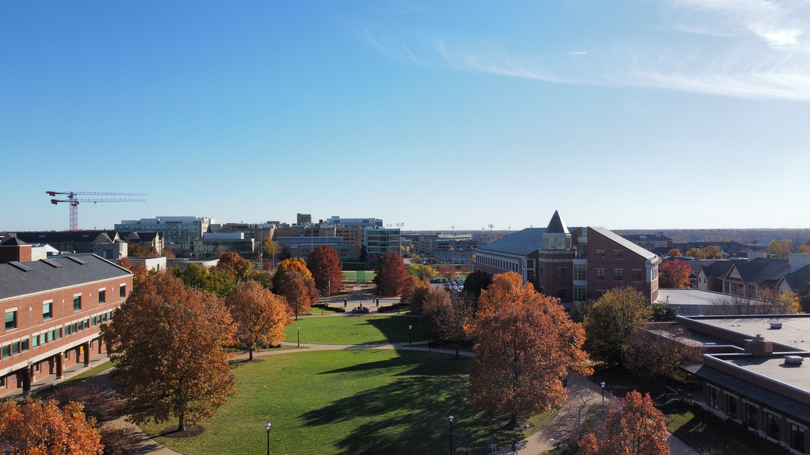
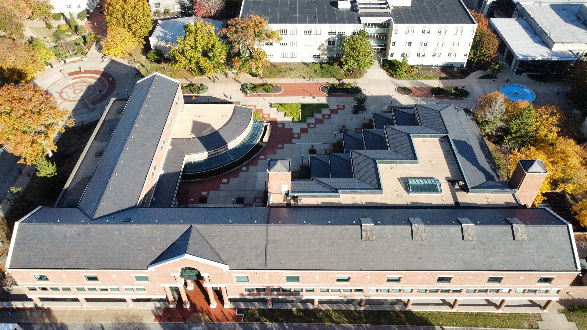
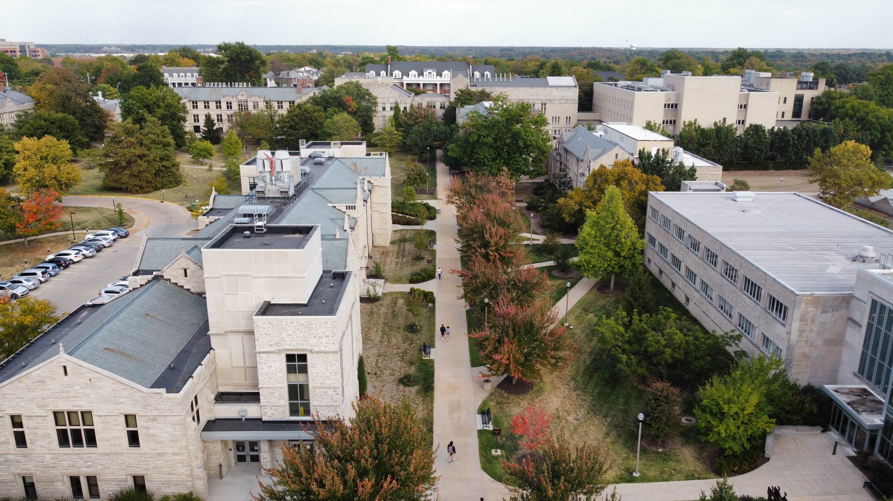

Trees that have colored fall leaves line the outside of Carnahan Quad. .
Tiger Plaza on a nice, sunny day with a background of Carnahan Quad. .

A drone shot from 150 feet above ground shows the unique geometry of the Law School building on MU's campus. .

This photo, taken from about 100 feet above ground, shows the area east of Memorial Union. .
From 400 feet above ground, this photo shows the north half of Francis Quad. .
From 400 feet above ground, this photo shows south half of Francis Quad, including all the buildings, the Columns and Jesse Hall .